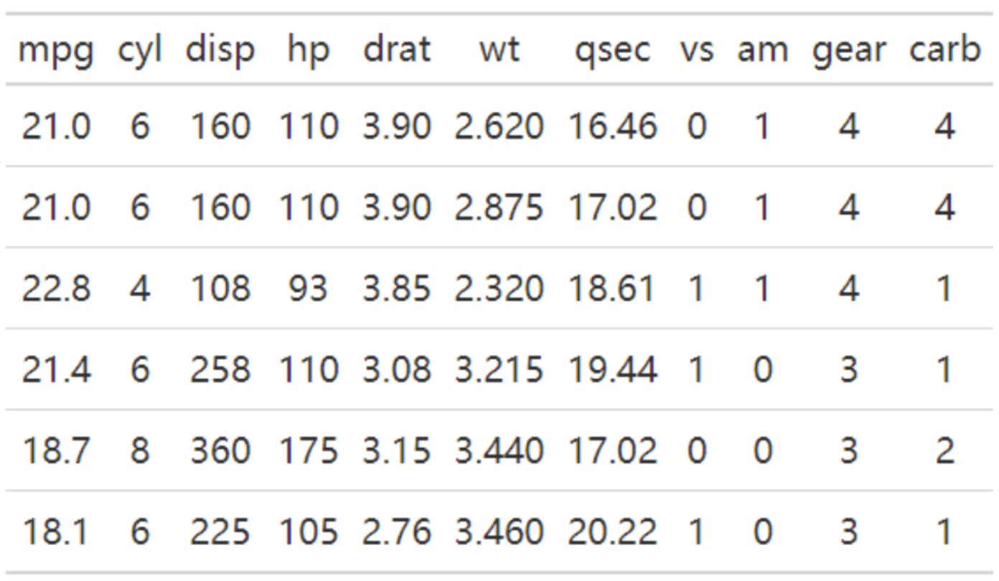
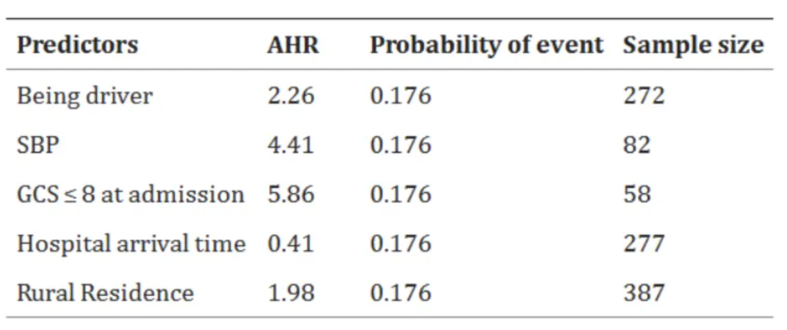
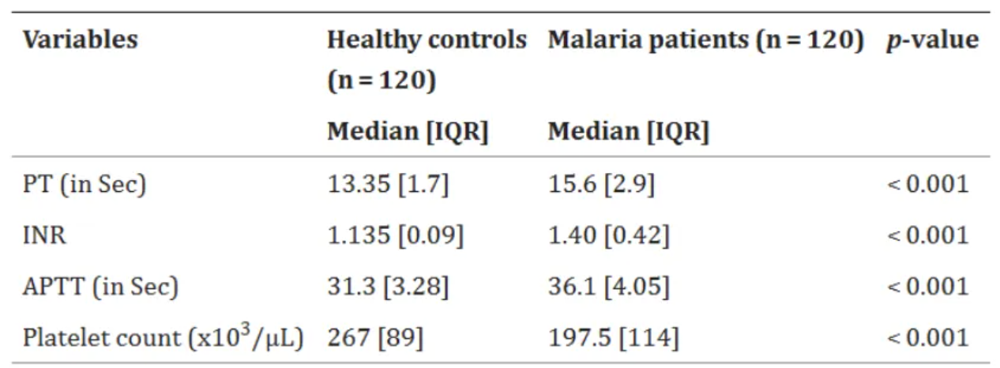

# Install packages
if (!requireNamespace("gt", quietly = TRUE)) {
install.packages("gt", type = "binary")
}
if (!requireNamespace("gtExtras", quietly = TRUE)) {
install.packages("gtExtras")
}
if (!requireNamespace("readr", quietly = TRUE)) {
install.packages("dplyr")
}
# Load packages
library(gt)
library(gtExtras) # Used to draw highlighted rows/columns
library(dplyr)Table
Tables are both a visual communication mode and a means of organizing and collating data.
Example

The table above is a basic table, containing a header row and 6 rows of data.
Setup
System Requirements: Cross-platform (Linux/MacOS/Windows)
Programming Language: R
Dependencies:
gt,gtExtras,dplyr
Data Preparation
The first 7 rows of the iris dataset and the first 7 rows of gastric cancer clinical data from the UCSC Xena database were selected.
# 1.Select the first 7 rows of the iris dataset
data <- iris[1:7,]
head(data) Sepal.Length Sepal.Width Petal.Length Petal.Width Species
1 5.1 3.5 1.4 0.2 setosa
2 4.9 3.0 1.4 0.2 setosa
3 4.7 3.2 1.3 0.2 setosa
4 4.6 3.1 1.5 0.2 setosa
5 5.0 3.6 1.4 0.2 setosa
6 5.4 3.9 1.7 0.4 setosa# 2.The first 7 rows of clinical data on gastric cancer from the UCSC Xena database (this clinical data was only used when creating the three-line table).
data_clinical <- read.table("https://bizard-1301043367.cos.ap-guangzhou.myqcloud.com/TCGA-STAD.survival.tsv", header = TRUE, sep = "\t")
data_clinical <- data_clinical[1:7,]
head(data_clinical) sample OS.time OS X_PATIENT
1 TCGA-CG-4306-01A 1 1 TCGA-CG-4306
2 TCGA-HU-A4GQ-01A 3 1 TCGA-HU-A4GQ
3 TCGA-FP-A8CX-01A 7 0 TCGA-FP-A8CX
4 TCGA-HU-A4GY-01A 8 0 TCGA-HU-A4GY
5 TCGA-HU-A4GY-11A 8 0 TCGA-HU-A4GY
6 TCGA-BR-8363-01A 8 1 TCGA-BR-8363Visualization
1. Basic Plotting
# You can draw the graph by calling the gt() function.
gt(data)| Sepal.Length | Sepal.Width | Petal.Length | Petal.Width | Species |
|---|---|---|---|---|
| 5.1 | 3.5 | 1.4 | 0.2 | setosa |
| 4.9 | 3.0 | 1.4 | 0.2 | setosa |
| 4.7 | 3.2 | 1.3 | 0.2 | setosa |
| 4.6 | 3.1 | 1.5 | 0.2 | setosa |
| 5.0 | 3.6 | 1.4 | 0.2 | setosa |
| 5.4 | 3.9 | 1.7 | 0.4 | setosa |
| 4.6 | 3.4 | 1.4 | 0.3 | setosa |
This table can be drawn by simply calling the gt() function.
2. Centered data
# `auto_align = FALSE` means disabling automatic alignment, which centers the element.
gt(data,auto_align = FALSE)| Sepal.Length | Sepal.Width | Petal.Length | Petal.Width | Species |
|---|---|---|---|---|
| 5.1 | 3.5 | 1.4 | 0.2 | setosa |
| 4.9 | 3.0 | 1.4 | 0.2 | setosa |
| 4.7 | 3.2 | 1.3 | 0.2 | setosa |
| 4.6 | 3.1 | 1.5 | 0.2 | setosa |
| 5.0 | 3.6 | 1.4 | 0.2 | setosa |
| 5.4 | 3.9 | 1.7 | 0.4 | setosa |
| 4.6 | 3.4 | 1.4 | 0.3 | setosa |
The data in the table is centered.
3. Add title
# tab_header() adds a main title and subtitle.
gt(data) %>% # "%>%" is a pipeline operator that can complete a series of pipeline operations
tab_header(title = md("**Iris** DataSet"), # Add a title, md displays text in markdown format
# Add a subtitle
subtitle = md("The species includes *Iris setosa, versicolor, and virginica*"))| Iris DataSet | ||||
| The species includes Iris setosa, versicolor, and virginica | ||||
| Sepal.Length | Sepal.Width | Petal.Length | Petal.Width | Species |
|---|---|---|---|---|
| 5.1 | 3.5 | 1.4 | 0.2 | setosa |
| 4.9 | 3.0 | 1.4 | 0.2 | setosa |
| 4.7 | 3.2 | 1.3 | 0.2 | setosa |
| 4.6 | 3.1 | 1.5 | 0.2 | setosa |
| 5.0 | 3.6 | 1.4 | 0.2 | setosa |
| 5.4 | 3.9 | 1.7 | 0.4 | setosa |
| 4.6 | 3.4 | 1.4 | 0.3 | setosa |
The table has been formatted with headings and subheadings in Markdown style.
4. Add footnotes
# Use tab_footnote() to add footnotes for titles.
gt(data) %>%
tab_header(title = md("**Iris** DataSet"),
subtitle = md("The species includes *Iris setosa
, versicolor, and virginica*")) %>%
tab_footnote(footnote = "Source: R help files",
locations = cells_title(groups="title"))| Iris DataSet1 | ||||
| The species includes Iris setosa , versicolor, and virginica | ||||
| Sepal.Length | Sepal.Width | Petal.Length | Petal.Width | Species |
|---|---|---|---|---|
| 5.1 | 3.5 | 1.4 | 0.2 | setosa |
| 4.9 | 3.0 | 1.4 | 0.2 | setosa |
| 4.7 | 3.2 | 1.3 | 0.2 | setosa |
| 4.6 | 3.1 | 1.5 | 0.2 | setosa |
| 5.0 | 3.6 | 1.4 | 0.2 | setosa |
| 5.4 | 3.9 | 1.7 | 0.4 | setosa |
| 4.6 | 3.4 | 1.4 | 0.3 | setosa |
| 1 Source: R help files | ||||
This table adds a footnote with the title Iris dataset.
5. Add merge cell label
# tab_spanner() adds a tab for merged cells.
gt(data) %>%
tab_header(title = md("**Iris** DataSet"),
subtitle = md("The species includes *Iris setosa
, versicolor, and virginica*")) %>%
tab_footnote(footnote = "Source: R help files",
locations = cells_title(groups="title")) %>%
tab_spanner(
label = "Sepal",columns = c(Sepal.Length, Sepal.Width)) %>%
tab_spanner(
label = "Petal",columns = c(Petal.Length, Petal.Width))| Iris DataSet1 | ||||
| The species includes Iris setosa , versicolor, and virginica | ||||
Sepal
|
Petal
|
Species | ||
|---|---|---|---|---|
| Sepal.Length | Sepal.Width | Petal.Length | Petal.Width | |
| 5.1 | 3.5 | 1.4 | 0.2 | setosa |
| 4.9 | 3.0 | 1.4 | 0.2 | setosa |
| 4.7 | 3.2 | 1.3 | 0.2 | setosa |
| 4.6 | 3.1 | 1.5 | 0.2 | setosa |
| 5.0 | 3.6 | 1.4 | 0.2 | setosa |
| 5.4 | 3.9 | 1.7 | 0.4 | setosa |
| 4.6 | 3.4 | 1.4 | 0.3 | setosa |
| 1 Source: R help files | ||||
This table uses tab_spanner() to add “Sepal” and “Petal” merged cell labels.
6. Add highlighted columns/rows
# Add highlighted columns/rows
gt(data,auto_align = FALSE) %>%
gt_highlight_cols(Petal.Length,fill = "blue",
alpha = 0.5) %>%
gt_highlight_rows(rows = c(1,3)) | Sepal.Length | Sepal.Width | Petal.Length | Petal.Width | Species |
|---|---|---|---|---|
| 5.1 | 3.5 | 1.4 | 0.2 | setosa |
| 4.9 | 3.0 | 1.4 | 0.2 | setosa |
| 4.7 | 3.2 | 1.3 | 0.2 | setosa |
| 4.6 | 3.1 | 1.5 | 0.2 | setosa |
| 5.0 | 3.6 | 1.4 | 0.2 | setosa |
| 5.4 | 3.9 | 1.7 | 0.4 | setosa |
| 4.6 | 3.4 | 1.4 | 0.3 | setosa |
This table has a highlighted column Petal.Length and highlighted rows 1 and 3.
7. md() and html() add text
# `md()` and `html()` add text
gt(data) %>%
# Use `md()` to bold the title and add a hyperlink. Use `html()` to add underlines, italics, and colors to the subtitle.
tab_header(title = md("[**Iris** DataSet](https://r-graph-gallery.com/)"),
subtitle = html("<u style='color:red;'>The species includes Iris
<i>setosa, versicolor, and virginica
</i></u>")) | Iris DataSet | ||||
| The species includes Iris setosa, versicolor, and virginica | ||||
| Sepal.Length | Sepal.Width | Petal.Length | Petal.Width | Species |
|---|---|---|---|---|
| 5.1 | 3.5 | 1.4 | 0.2 | setosa |
| 4.9 | 3.0 | 1.4 | 0.2 | setosa |
| 4.7 | 3.2 | 1.3 | 0.2 | setosa |
| 4.6 | 3.1 | 1.5 | 0.2 | setosa |
| 5.0 | 3.6 | 1.4 | 0.2 | setosa |
| 5.4 | 3.9 | 1.7 | 0.4 | setosa |
| 4.6 | 3.4 | 1.4 | 0.3 | setosa |
md() and html() add text
This table allows you to add text and modify its style using md() and html(). You can learn the basic syntax of Markdown and HTML formats to change the formatting of the added text.
8. Change table style
tab_style() has a rich set of table style content, including table color fill, table content color, alignment, size, etc., and border style changes. The parameter style sets the style, and locations sets the location where the style takes effect.
Three-wire table
# `cell_borders()` represents the cell borders, and `cells_body()` represents the position of the table body.
gt(data_clinical,auto_align = FALSE) %>%
tab_style(
style=cell_borders(sides = "bottom",
style="hidden"), # Style set to hidden
locations=cells_body(rows=c(1,2,3,4,5,6)) # Position yourself at the bottom of the main line excluding the last line.
)| sample | OS.time | OS | X_PATIENT |
|---|---|---|---|
| TCGA-BR-A4J9-01A | 14 | 0 | TCGA-BR-A4J9 |
This table is similar to the commonly used three-line table chart format, and the table content is the clinical data of gastric cancer.
Tip
Key parameters: style / locations
style：To set the style of a cell, options includecell_fill(): cell fill,cell_text(): cell text, andcell_borders(): cell borders. Multiple style items can be included usinglist().locations：The options for applying style attributes includecells_title()(table title),cells_body()(table body),cells_footnotes()(table footnotes), andcells_column_labels()(table column names). Multiple locations can be specified usinglist().cells_body()takesrowsandcolumnsparameters to specify the rows and columns.cells_column_labels()takescolumnsparameters to specify the columns.
Full-border table
# Full-border table
gt(data,auto_align = FALSE) %>%
tab_style(
style=cell_borders(sides = c("top", "bottom","left","right"),
weight = px(2)), # Set the top, bottom, left, and right borders.
locations=list(cells_body(),cells_column_labels()) # For multiple types or multiple positions, a list can be used, and cells_column_labels() refers to the column names.
)| Sepal.Length | Sepal.Width | Petal.Length | Petal.Width | Species |
|---|---|---|---|---|
| 5.1 | 3.5 | 1.4 | 0.2 | setosa |
| 4.9 | 3.0 | 1.4 | 0.2 | setosa |
| 4.7 | 3.2 | 1.3 | 0.2 | setosa |
| 4.6 | 3.1 | 1.5 | 0.2 | setosa |
| 5.0 | 3.6 | 1.4 | 0.2 | setosa |
| 5.4 | 3.9 | 1.7 | 0.4 | setosa |
| 4.6 | 3.4 | 1.4 | 0.3 | setosa |
The borders of this table are all displayed. Except for three-line grids and full-border tables, you can use tab_style() to change the presence, color, thickness, and style of the cell borders.
9. Change text style
# Change text style
gt(data) %>%
tab_style(
style=cell_text(color="blue",font="bold",size="large",align="center",
v_align="middle",style="italic",weight="normal",
decorate="underline"),
locations=cells_body(rows=2,columns=Sepal.Length)
)| Sepal.Length | Sepal.Width | Petal.Length | Petal.Width | Species |
|---|---|---|---|---|
| 5.1 | 3.5 | 1.4 | 0.2 | setosa |
| 4.9 | 3.0 | 1.4 | 0.2 | setosa |
| 4.7 | 3.2 | 1.3 | 0.2 | setosa |
| 4.6 | 3.1 | 1.5 | 0.2 | setosa |
| 5.0 | 3.6 | 1.4 | 0.2 | setosa |
| 5.4 | 3.9 | 1.7 | 0.4 | setosa |
| 4.6 | 3.4 | 1.4 | 0.3 | setosa |
This table has its text style changed in the second row, first column.
Tip
Key parameters: size/align/v_align/style/weight/decorate
size：Text size options include “xx-small”, “x-small”, “small”, “medium”, “large”, “x-large”, “xx-large”, or a custom value using px().align：Horizontal alignment options include “center”, “left”, “right”, and “justify” (aligning each line).v_align：Vertical alignment options include “top”, “bottom”, and “middle”.style：Text style options include “normal”, “italic”, and “oblique”.weight：The text thickness can be adjusted using options such as “normal”, “bold”, “lighter”, “bolder”, or numbers from 1 to 1000.decorate：Add a line segment with options such as “overline” (the line is on the text), “line-through” (the line passes through the text), and “underline” (the line is below the text).
10. Change fill style
# Change fill style
gt(data) %>%
tab_style(
style=cell_fill(color = "yellow", alpha =0.5), # Just two parameters, color and transparency
locations=cells_body(rows=2,columns=Sepal.Length)
)| Sepal.Length | Sepal.Width | Petal.Length | Petal.Width | Species |
|---|---|---|---|---|
| 5.1 | 3.5 | 1.4 | 0.2 | setosa |
| 4.9 | 3.0 | 1.4 | 0.2 | setosa |
| 4.7 | 3.2 | 1.3 | 0.2 | setosa |
| 4.6 | 3.1 | 1.5 | 0.2 | setosa |
| 5.0 | 3.6 | 1.4 | 0.2 | setosa |
| 5.4 | 3.9 | 1.7 | 0.4 | setosa |
| 4.6 | 3.4 | 1.4 | 0.3 | setosa |
This table adds a fill style for the second row and first column.
Applications

The above charts show the sample size statistics of survival status and predictive factors of adult RTA patients admitted to the comprehensive specialist public hospital in Bahir Dar. [1]

The chart above shows a comparison of basic coagulation status between malaria patients and a healthy control group at Zeman Primary Hospital outpatient clinic and voluntary counseling and testing clinic (n=240) in Addis Ababa from June 1, 2021 to February 30, 2022. [2]

The above chart compares the surgical characteristics and outcomes of patients with long-term COVID-19 symptoms and those without long-term COVID-19 symptoms. [3]
Reference
[1] KEBEDE A G, TEGENAW A, TAMIR Y, et al. Survival status and its predictors among adult victims of road traffic accident admitted to public hospitals of Bahir Bar City, Amhara regional state, Northwest, Ethiopia, 2023: multi center retrospective follow-up study[J]. BMC Emerg Med, 2024,24(1): 177.
[2] TIRUNEH T, ALMAW A, ABEBAW A, et al. Basic coagulation parameters and platelet count among malaria patients attending at Addis Zemen Primary Hospital, Northwest Ethiopia[J]. BMC Infect Dis, 2024,24(1): 1069.
[3] GOLDHABER N H, RAMESH K, HORTON L E, et al. The Long Haul to Surgery: Long COVID Has Minimal Burden on Surgical Departments[J]. Int J Environ Res Public Health, 2024,21(9).